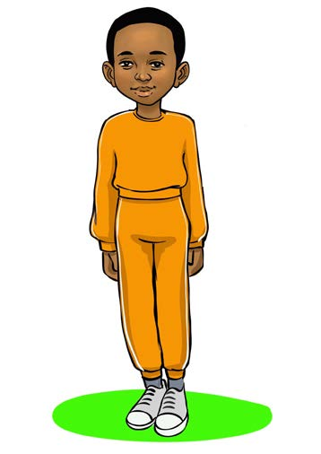

ustadi na ukakamavu, mfano, kwa kufanya mazoezi ya kujisawazisha na wepesi. Baadhi ya mazoezi ya kujisawazisha na wepesi ni kama ifuatavyo:
1. Kisigino kidoleni;
2. Hatua za mzabibu;
3. Ngazi ya wepesi; na
4. Mwendo wa mnyama.
Kisigino kidoleni
Hili ni zoezi linalojenga msawazo wa mwili na husaidia uwe tayari kufanya michezo na kazi mbalimbali shuleni na nyumbani.
Hatua za kufuata:
1. Fanya mazoezi ya kuandaa mwili.
2. Simama wima huku miguu ikiwa pamoja.

43